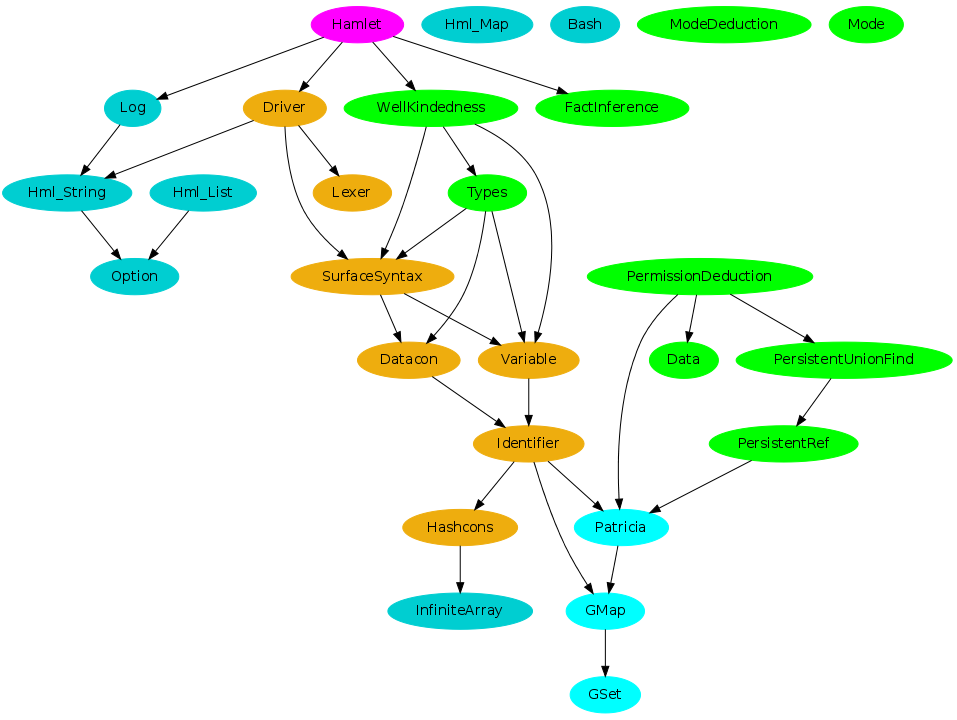

HaMLet is a dialect of ML with effects control and a fine-grained type system.
Some data structures
| Hashcons | |
| GMap | |
| GSet | |
| Patricia | |
| InfiniteArray |
This module implements infinite arrays.
|
Some helper modules
| Bash |
Provides wrappers for some bash fancy printing, mainly boxes and colors.
|
| Hml_List |
A bunch of useful functions for lists.
|
| Hml_Map |
Various missing functions from the
Map module.
|
| Hml_String |
Various string utilities.
|
| Option |
No "J" prefix for this module since OCaml's standard library does not have
an
Option module.
|
| Log |
This module provides error reporting functions for ChaML.
|
Third-party modules
Some extra software is bundled.
| Ulexing |
Runtime support for lexers generated by
ulex.
|
Dependency graph
